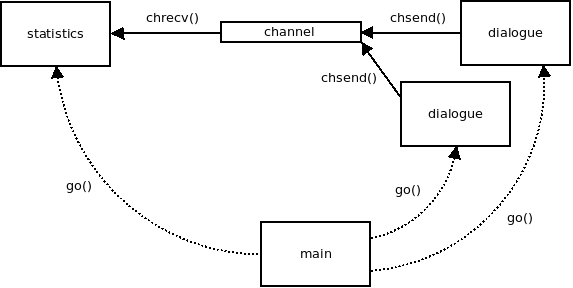

In this tutorial, you will develop a simple TCP "greet" server. Clients are meant to connect to it by telnet. After a client has connected, the server will ask for their name, reply with a greeting, and then proceed to close the connection.
An interaction with the server will look like this:
$ telnet 127.0.0.1 5555
Trying 127.0.0.1...
Connected to 127.0.0.1.
Escape character is '^]'.
What's your name?
Bartholomaeus
Hello, Bartholomaeus!
Connection closed by foreign host.Throughout the tutorial, you will learn how to use coroutines, channels, and sockets.
Start by including the libdill header file. Later we'll need some functionality from the standard library, so include those headers as well:
#include <libdill.h>
#include <assert.h>
#include <errno.h>
#include <stdio.h>
#include <stdlib.h>
#include <string.h>
#include <unistd.h>Add a main function. We'll assume that the first argument, if present, will be the port number to be used by the server. If not specified, the port number will default to 5555:
int main(int argc, char *argv[]) {
int port = 5555;
if(argc > 1) port = atoi(argv[1]);
return 0;
}Now we can move on to the actual interesting stuff.
The tcp_listen() function creates a listening TCP socket. The socket can be used to accept new TCP connections from clients:
struct ipaddr addr;
int rc = ipaddr_local(&addr, NULL, port, 0);
if (rc < 0) {
perror("Can't open listening socket");
return 1;
}
int ls = tcp_listen(&addr, 10);
assert( ls >= 0 );The ipaddr_local() function converts the textual representation of a local IP address to the actual address. Its second argument can be used to specify a local network interface to bind to. This is an advanced feature and you likely won't need it. For now, you can simply ignore it by setting it to NULL. This will cause the server to bind to all local network interfaces available.
The third argument is, unsurprisingly, the port that clients will connect to. When testing the program, keep in mind that valid port numbers range from 1 to 65535 and that binding to ports 1 through 1023 will typically require superuser privileges.
If tcp_listen() fails, it will return -1 and set errno to the appropriate error code. The libdill API is in this respect very similar to standard POSIX APIs. Consequently, we can use standard POSIX error-handling mechanisms such as perror() in this case.
As for unlikely errors, the tutorial will simply use asserts to catch them so as to stay succinct and readable.
If you run the program at this stage, you'll find out that it terminates immediately without pausing or waiting for a client to connect. That is what the tcp_accept() function is for:
int s = tcp_accept(ls, NULL, -1);
assert(s >= 0);The function returns the newly established connection.
Its third argument is a deadline. We'll cover deadlines later on in this tutorial. For now, remember that the constant -1 can be used to mean 'no deadline' — if there is no incoming connection, the call will block forever.
Finally, we want to handle any number of client connections instead of just one so we put the tcp_accept() call into an infinite loop. For now we'll just print a message when a new connection is established. We will close it immediately:
while(1) {
int s = tcp_accept(ls, NULL, -1);
assert(s >= 0);
printf("New connection!\n");
rc = hclose(s);
assert(rc == 0);
}The source code for this step can be found in the libdill repository as tutorial/step1.c. All the steps that follow can be found in the same directory.
Build the program like this:
$ gcc -o greetserver step1.c -ldillThen run the resulting executable:
$ ./greetserverThe server is now waiting for a new connection. Use telnet at a different terminal to establish one and then check whether the program works as expected:
$ telnet 127.0.0.1 5555To test whether error handling works, try using an invalid port number:
$ ./greetserver 70000
Can't open listening socket: Invalid argument
$Everything seems to work as expected. Let's now move on to the step 2.
When a new connection arrives, the first thing that we want to do is to establish the network protocol we'll be using. libdill contains a small library of easily composable microprotocols that allows you to compose a wide range of protocols just by plugging different microprotocols into each other in a lego brick fashion. In this tutorial, however, we are going to limit ourselves to just a very simple setup. On top of the TCP connection that we've just created, we'll have a simple protocol that will split the TCP bytestream into discrete messages, using line breaks (CR+LF) as delimiters:
int s = suffix_attach(s, "\r\n", 2);
assert(s >= 0);Note that hclose() works recursively. Given that our SUFFIX socket wraps an underlying TCP socket, a single call to hclose() will close both of them.
Once finished with the setup, we can send the "What's your name?" question to the client:
rc = msend(s, "What's your name?", 17, -1);
if(rc != 0) goto cleanup;Note that msend() works with messages, not bytes (the name stands for "message send"). Consequently, the data will act as a single unit: either all of it is received or none of it is. Also, we don't have to care about message delimiters. That's done for us by the SUFFIX protocol.
To handle possible errors from msend() (such as when the client has closed the connection), add a cleanup label before the hclose line and jump to it whenever you want to close the connection and proceed without crashing the server.
char inbuf[256];
ssize_t sz = mrecv(s, inbuf, sizeof(inbuf), -1);
if(sz < 0) goto cleanup;The above piece of code simply reads the reply from the client. The reply is a single message, which in our case translates to a single line of text. The mrecv function returns the number of bytes in the message.
Having received a reply, we can now construct the greeting and send it to the client. The analysis of this code is left as an exercise to the reader:
inbuf[sz] = 0;
char outbuf[256];
rc = snprintf(outbuf, sizeof(outbuf), "Hello, %s!", inbuf);
rc = msend(s, outbuf, rc, -1);
if(rc != 0) goto cleanup;Compile the program and check whether it works as expected.
At this point, the client cannot crash the server, but it can block it. Do the following experiment:
The reason for this behavior is that the program doesn't even start accepting new connections until the entire dialog with the client has finished. What we want instead is to run any number of dialogues with clients in parallel. And that is where coroutines kick in.
Coroutines are defined using the coroutine keyword and launched with the go() construct.
In our case, we can move the code performing the dialogue with the client into a separate function and launch it as a coroutine:
coroutine void dialogue(int s) {
int rc = msend(s, "What's your name?", 17, -1);
...
cleanup:
rc = hclose(s);
assert(rc == 0);
}
int main(int argc, char *argv[]) {
...
while(1) {
int s = tcp_accept(ls, NULL, -1);
assert(s >= 0);
s = suffix_attach(s, "\r\n", 2);
assert(s >= 0);
int cr = go(dialog(s));
assert(cr >= 0);
}
}Let's compile it and try the initial experiment once again. As can be seen, one client now cannot block another one. Excellent. Let's move on.
Now it's time to consider how to shut down the server cleanly. In the real-world you would have some kind of administrative user interface to ask the server to terminate. In our case we'll make it simple and just shut down the server after three clients have connected to it.
Once we get out of the loop we have to deallocate all the allocated resources. For example, we have to close the listening socket.
More importantly though, we are creating coroutines and never closing the coroutine handles. In fact, the previous step of this tutorial contains a memory leak: While individual dialogue coroutines finish and their stacks are automatically deallocated, the handles to those coroutines remain open and consume a little bit of memory. If the server was run for a very long time those handles would eventually accumulate and cause memory usage to go up.
Closing them is not an easy feat though. The main function would have to keep a list of all open coroutine handles. The coroutines, before they exit, would have to notify the main function about the fact so that it can close the handle... The more you think about it the more complex it gets.
Luckily though, libdill has a concept of coroutine bundles. Bundle is a set of zero or more coroutines referred to by a single handle. In fact, there's no such a thing as direct coroutine handle. Even go which seems to return a coroutine handle really returns a handle to a bundle containing a single coroutine.
We can use bundles to solve our cleanup problem. First, we will create an empty bundle. Then we will launch individual dialogue coroutines within the bundle. As the execution of any particular coroutine finishes its stack will be automatically deallocated and it will be removed from the bundle. There will be no memory leaks.
Moreover, when shutting down the server we have only a single handle the close which will, in turn, cancel all the coroutines that are still running.
int main(int argc, char *argv[]) {
...
int b = bundle();
assert(b >= 0);
int i;
for(i = 0; i != 3; i++) {
int s = tcp_accept(ls, NULL, -1);
assert(s >= 0);
s = suffix_attach(s, "\r\n", 2);
assert(s >= 0);
rc = bundle_go(b, dialogue(s));
assert(rc == 0);
}
rc = hclose(b);
assert(rc == 0);
rc = hclose(ls);
assert(rc == 0);
return 0;
}One thing to remember about canceling coroutines is that once a coroutine is canceled all the blocking operations within the coroutine, such as reading from a socket or sleeping, will start returning ECANCELED error. The coroutine should then deallocate all its resources and exit.
Looking at our dialogue coroutine it turns out that it already does that. It responds to any error, including ECANCELED by closing the socket handle and exiting.
Now try to compile this step and run it under valgrind. (Don't forget to compile libdill itself with --enable-valgrind and --disable-shared options!) Here's what you'll get:
==179895== HEAP SUMMARY:
==179895== in use at exit: 0 bytes in 0 blocks
==179895== total heap usage: 11 allocs, 11 frees, 1,329,272 bytes allocated
==179895==
==179895== All heap blocks were freed -- no leaks are possibleTo get some background on how object lifetimes are supposed to be managed in libdill read the article about structured concurrency.
File descriptors can be a scarce resource. If a client connects to the greetserver and lets the dialogue hang without entering a name, one file descriptor on the server side is, for all intents and purposes, wasted.
To deal with the problem, we are going to timeout the whole client/server dialogue. If it takes more than 10 seconds, the server will kill the connection at once.
One thing to note is that libdill uses deadlines rather than the more conventional timeouts. In other words, you specify the time instant by which you want the operation to finish rather than the maximum time it should take to run it. To construct deadlines easily, libdill provides the now() function. The deadline is expressed in milliseconds, which means you can create a deadline one minure in the future as follows:
int64_t deadline = now() + 60000;Furthermore, you have to modify all potentially blocking function calls in the program to take the deadline parameter. In our case:
int64_t deadline = now() + 60000;
int rc = msend(s, "What's your name?", 17, deadline);
if(rc != 0) goto cleanup;
char inbuf[256];
ssize_t sz = mrecv(s, inbuf, sizeof(inbuf), deadline);
if(sz < 0) goto cleanup;Note that errno is set to ETIMEDOUT if the deadline is reached. Since we're treating all errors the same (by closing the connection), we don't make any specific provisions for deadline expiries.
Now note that the third connection to the greetserver is closed immediately without even given user a chance to enter their name. This is a common use case for network servers. When the server is being shut down we want it to stop accepting new connections, but we also want to give it some time to finish handling those connections that are still open.
This can be achieved by calling bundle_wait() on the dialogue() coroutine bundle. bundle_wait() waits for all the coroutines in the bundle to finish. Also, it allows to specify a deadline. We can do so immediately after exiting the loop:
rc = bundle_wait(b, now() + 10000);
assert(rc == 0 || (rc < 0 && errno == ETIMEDOUT));Suppose we want the greetserver to keep statistics: The overall number of connections made, the number of those that are active at the moment and the number of those that have failed.
In a classic, thread-based application, we would keep the statistics in global variables and synchronize access to them using mutexes.
With libdill, however, we aim at "concurrency by message passing", and so we are going to implement the feature in a different way.
We will create a new coroutine that will keep track of the statistics and a channel that will be used by the dialogue() coroutines to communicate with it:

First, we define the values that will be passed through the channel:
#define CONN_ESTABLISHED 1
#define CONN_SUCCEEDED 2
#define CONN_FAILED 3Now we can create the channel and pass it to the dialogue() coroutines:
coroutine void dialogue(int s, int ch) {
...
}
int main(int argc, char *argv[]) {
...
int ch[2];
rc = chmake(ch);
assert(rc == 0);
while(1) {
int s = tcp_accept(ls, NULL, -1);
assert(s >= 0);
s = suffix_attach(s, "\r\n", 2);
assert(s >= 0);
int cr = go(dialogue(s, ch[1]));
assert(cr >= 0);
}
}Libdill channels are "unbuffered". In other words, the sending coroutine will block each time until the receiving coroutine can process the message.
This kind of behavior could, in theory, become a bottleneck, however, in our case we assume that the statistics() coroutine will be extremely fast and not turn into one.
At this point we can implement the statistics() coroutine, which will run forever in a busy loop and collect statistics from all the dialogue() coroutines. Each time the statistics change, it will print them to stdout:
coroutine void statistics(int ch) {
int active = 0;
int succeeded = 0;
int failed = 0;
while(1) {
int op;
int rc = chrecv(ch, &op, sizeof(op), -1);
if(rc < 0 && errno == ECANCELED) return;
switch(op) {
case CONN_ESTABLISHED:
++active;
break;
case CONN_SUCCEEDED:
--active;
++succeeded;
break;
case CONN_FAILED:
--active;
++failed;
break;
}
printf("active: %-5d succeeded: %-5d failed: %-5d\n",
active, succeeded, failed);
}
}
int main(int argc, char *argv[]) {
...
int ch[2];
rc = chmake(ch);
assert(rc == 0);
int cr = go(statistics(ch[0]));
assert(cr >= 0);
...
}The chrecv() function will retrieve one message from the channel or block if there is none available. At the moment we are not sending anything to it, so the coroutine will simply block forever.
To fix that, let's modify the dialogue() coroutine to send some messages to the channel. The chsend() function will be used to do that:
coroutine void dialogue(int s, int ch) {
int op = CONN_ESTABLISHED;
int rc = chsend(ch, &op, sizeof(op), -1);
assert(rc == 0);
...
cleanup:
op = errno == 0 ? CONN_SUCCEEDED : CONN_FAILED;
rc = chsend(ch, &op, sizeof(op), -1);
assert(rc == 0 || errno == ECANCELED);
rc = hclose(s);
assert(rc == 0);
}Now recompile the server and run it. Create a telnet session and let it time out. The output on the server side will look like this:
$ ./greetserver
active: 1 succeeded: 0 failed: 0
active: 0 succeeded: 0 failed: 1The first line is displayed when the connection is established: There is one active connection and no connection has succeeded or failed yet.
The second line shows up when the connection times out: There are no active connection anymore and one connection has failed so far.
And that's the end of the tutorial. Enjoy your time with the library!